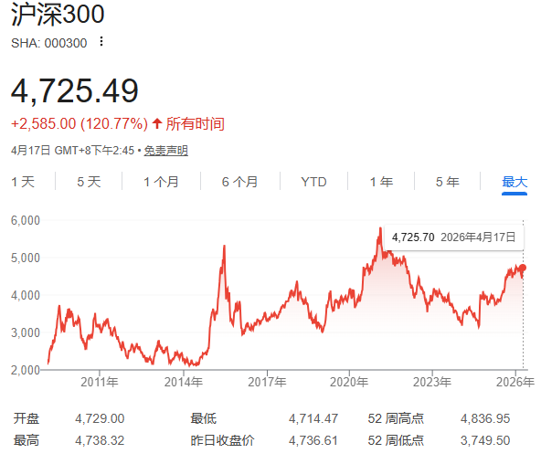
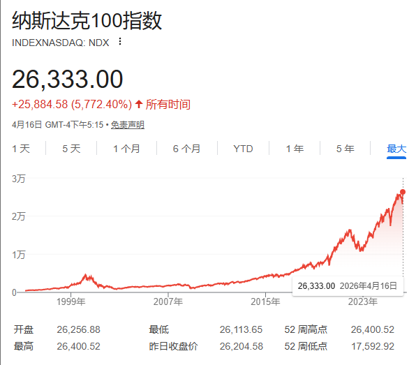
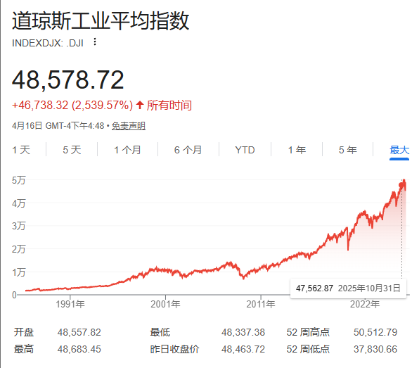
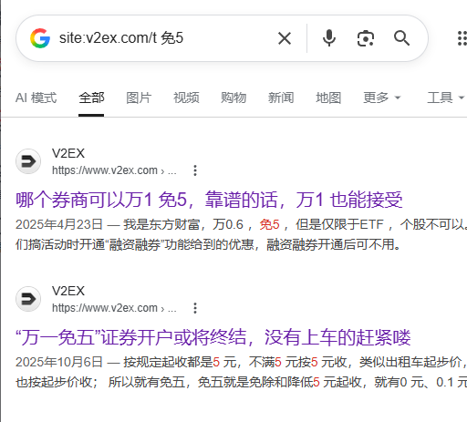

财务自由·我的10年后退休计划
一、目标
现在我35岁，假设能活到100岁，根据以往，我个人年平均支出3w元，希望在10年后，45岁实现财务自由
原先我的错误线性思维计算方式：
近3年的总支出/3*（100-35））
那么财务自由预计需要：3*65=195w
再假设能工作到45岁，那么还剩10年，需要195/10=19.5/年
每个月需要19.5/12=1.625w
- 你假设未来 65 年的支出都按现在的价格算，但实际生活成本会持续上升。
- 举例：如果通胀率 3%，35 岁时 3 万元的购买力，在你 65 岁时大概只相当于现在的 1 万元。
- 所以未来需要的钱要远大于 195 万。
👉 修正思路： 可以用复利公式估算通胀后的支出： $$ 未来支出 = 年支出 × \frac{(1+通胀率)^{年数} - 1}{通胀率} $$ 例如，3 万/年，通胀率 3%，持续 65 年： $$ = 3 × \frac{(1.03)^{65} - 1}{0.03} ≈ 3 × 152 ≈ 456 万 $$ 所以真实总需求 ≈ 450～500 万。
2️⃣ 没考虑 投资收益或被动收入
-
如果你投资（如基金、债券、房租、股息等）平均年收益 4~6%，那本金需求会显著下降。
-
一般财务自由定义是：
资产 × 年收益率 ≥ 年支出
如果年支出 3 万、目标收益率 5%， 则只需 $3 / 0.05 = 60 万$ 的可持续投资本金即可。 当然这是假设支出、收益稳定且通胀抵消的情况。
3️⃣ 没区分“储蓄到财务自由”与“被动收入覆盖支出”
你的算法属于“攒够未来所有生活费”， 而现实中更多人追求的是“资产能自己产生足够现金流”。
也就是说， ✅ 如果你攒够 195 万且不动用本金，投资年化收益 5%， → 年收益 9.75 万，完全能覆盖 3 万支出。 那你已经财务自由了。 而不必攒到几百万“够花一辈子”。
4️⃣ 没考虑 支出结构变化
- 退休后支出可能下降（通勤、教育、住房成本减少），
- 但医疗支出可能增加。
- 所以按固定 3 万/年可能过于简化，但对于“平均估算”也可以接受。
✅ 更合理的改进版模型：
假设：
- 目标：年支出 3 万（以今日币值）
- 通胀：3%
- 投资回报率：5%
- 当前年龄：35 岁
- 希望 45 岁实现财务自由（10 年后）
👉 按照“4%法则”（FIRE 理论常用经验值）： $$ 财务自由所需本金 = 年支出 × 25 = 3 × 25 = 75 万 $$ 但是这个“3 万”是现在币值，10 年后通胀 3%，折算成： $$ 3 × (1.03)^{10} ≈ 4.0 万 $$ 所以实际目标本金： $$ 4 × 25 = 100 万左右 $$ 也就是说：
你需要在 45 岁前攒到 约 100 万可投资资产，并维持 5% 左右年化收益率，就能实现财务自由。
🧭 总结：
| 项目 | 你的计算 | 改进后（考虑通胀+收益） |
|---|---|---|
| 目标本金 | 195 万 | ≈ 100 万（4%法则） |
| 模型假设 | 静态攒钱 | 动态投资+通胀 |
| 每月目标 | 1.6 万存款 | 若10年攒100万，则约0.83万/月 |
二、中美股认识
中国：只考虑沪深300就行（沪深300代表“中国国运”）
| 对比项 | 沪深300 | 中证A500 |
|---|---|---|
| 成分股数量 | 300只 | 500只 |
| 选股逻辑 | 按市值大小简单排名，选前300大 | 按“行业均衡”原则选股，确保每个行业都有代表性 |
| 行业分布 | 金融(国资)、传统行业权重偏重 | 新经济（科技、新能源、医药等）占比更高 |
| 历史收益 | 过去10年年化约3-4% | 过去10年年化收益略高于沪深300 |
| 代表企业 | 消费/金融： 贵州茅台、五粮液、中国平安、招商银行、宁波银行。制造/工业： 宁德时代、美的集团、长江电力、海康威视、比亚迪。 | 科技/电子： 中兴通讯、 TCL科技、歌尔股份、北方华创。 原材料/工业： 中联重科、璞泰来、紫金矿业、华友钴业。 医疗/服务： 长春高新、智飞生物、爱尔眼科 |

美股四大核心指数对比表
| 对比维度 | 标普500 | 纳斯达克100 | MSCI美国50 | 道琼斯工业指数 |
|---|---|---|---|---|
| 一句话定位 | 美股核心代表，巴菲特推荐首选 | 美国科技股主力军 | 美股超大盘精华版 | 历史最悠久的蓝筹象征 |
| 通俗比喻 | “美国全明星队”包含纳斯达克100在内 | “科技明星队”苹果、微软、英伟达、亚马逊、Meta、谷歌+通讯相关等100家科技公司 | “超巨精华队” | “元老会”波音、可口可乐、迪士尼、美国运通 |
| 行业特征 | 均衡分布（科技、金融、医疗、消费等） | 科技股超50%，高度集中 | 极度集中，前十大权重股占比很高 | 传统蓝筹为主，代表性强 |
| 历史年化收益（近10年） | 约10-12% | 约14-15%（更高） | 略高于标普500 | 低于标普500 |
| 最大回撤（波动风险） | 约30-35% | 约35%以上（更高波动） | 接近标普500 | 相对较低 |
| 适合什么样的你 | 绝大多数人的首选，求稳求全 | 相信科技、愿意承受大波动追求高收益 | 极度偏爱龙头，相信“越大越强” | 投资价值已不大，参考意义大 |
美股：只考虑纳斯达克100


2.“利息” vs “分红”
首先，我们要分清两种完全不同的东西：
- 银行存款的“利息”：你把钱借给银行，银行承诺给你一个固定的回报。这是稳赚的，每天都有。
- ETF的“分红”：你买入的沪深300ETF，背后是300家中国最大的上市公司。这些公司赚钱了，会把一部分利润以现金形式分给股东。基金公司收到这些钱后，也会分给你，这叫分红。这不是稳赚的，因为如果公司不赚钱，就不分红，而且分红后基金净值会相应下降。
一句话总结：买ETF没有“利息”，但有“分红”和“价格上涨”的潜力。
这就像你投资了一个房子，分红相当于租金收入，净值上涨相当于房价上涨。
3.如何获得分红？关键看三个日子
ETF分红不像存款利息那样天天有，它一年可能分1-2次，分多分少看行情。要拿到分红，你只需要在权益登记日当天持有该ETF即可，和持有时间长短无关。
以你选的银河证券为例，查看和获得分红的具体操作如下：
| 步骤 | 操作指引 (在银河证券APP) | 说明 |
|---|---|---|
| 1. 查询分红公告 | 登录APP，搜索你买的ETF代码（如510300），查看基金公告。 | 公告里会写明“权益登记日”、“除息日”和“现金红利发放日”。 |
| 2. 确认持有 | 什么都不用做，只要在权益登记日当天收盘后，你的账户里还持有该ETF份额。 | 这是获得分红的唯一条件，跟你买了1个月还是1年没关系。 |
| 3. 收到现金 | 在“现金红利发放日”当天或次日，登录APP，进入【交易】→【资金流水】，筛选“股息红利”。 | 分红会以现金形式直接打到你的证券账户余额里，你可以随时转出或继续投资。 |
一个常见的误解澄清：有人觉得分红是“左手倒右手”，因为分完红净值会跌。没错，但别忘了，好公司的股价长期是上涨的，分红+价格上涨，才是你真正的总回报。
红利再投资：让“复利”为你工作
分红到账后，你有两个选择：
- 落袋为安：把现金拿出来花掉。
- 红利再投资：用分红的钱，以当天收盘价自动买入更多的ETF份额。
对于你这种“每月定投”的长期懒人来说，强烈建议开启“红利再投资”。这是复利效应的核心——让你的分红也能继续为你赚钱。
如何在银河证券APP操作？ 通常在【业务办理】或【基金设置】里，找到“修改分红方式”，将“现金分红”改为“红利再投资”。这样，未来每次分红都会自动帮你买成份额，省心又高效。
三、怎么购买
场内 vs 场外：费用到底差多少？
用你每月3200元定投沪深300来算，一年下来差距很明显：
| 对比项 | 场内ETF（券商买） | 场外联接基金（支付宝买） |
|---|---|---|
| 买入费率 | 佣金 万1（0.01%） | 申购费 0.12%（打1折后） |
| 卖出费率 | 佣金 万1（0.01%） | 持有超1年 0% |
| 单次买入费用（3200元） | 0.32元 | 3.84元 |
| 一年12次买入总费用 | 约3.8元 | 约46元 |
| 额外注意 | 有单笔最低5元限制 | 无最低收费 |
⚠️ 关键陷阱：最低5元收费
很多券商虽然宣传"万1佣金"，但单笔交易最低收5元。
这意味着：你每月买3200元，按万1算本该只收0.32元，但券商直接收你5元——实际费率被拉高到0.156%，比场外的0.12%还贵！
结论：只有找到"取消最低5元"的券商，场内才能真正省钱。
直接v站找免5，比直接去官方开户优惠不少！但也要注意甄别骗子！

四、10年理财方案
回到最初目标，我年平均支出3w元，目前35岁，希望在45岁可以财务自由，每月8000元闲钱用于投资，10年的理财方案规划如下：
1. 沪深300（50-60%）
- 当前2026年4月17日买入不算高点下可以操作
2. 纳斯达克100（30-40%）
- 当前2026年4月17日高点下暂不买入
3. eth（10%）
**4. 创业项目·二手回收维修闲鱼卖货·兼职装机/维修服务·咨询服务·3D打印工艺品网店销售等（0-100%）**需要很合适才出手去干